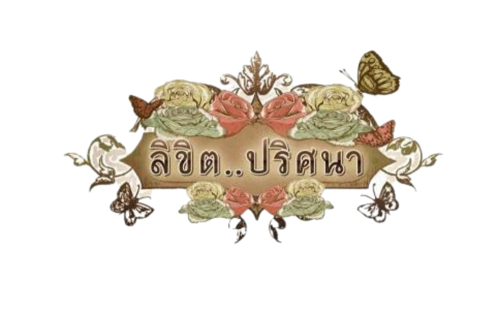
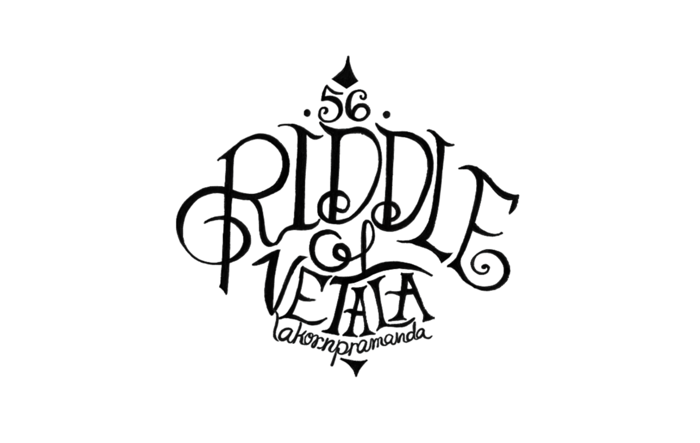
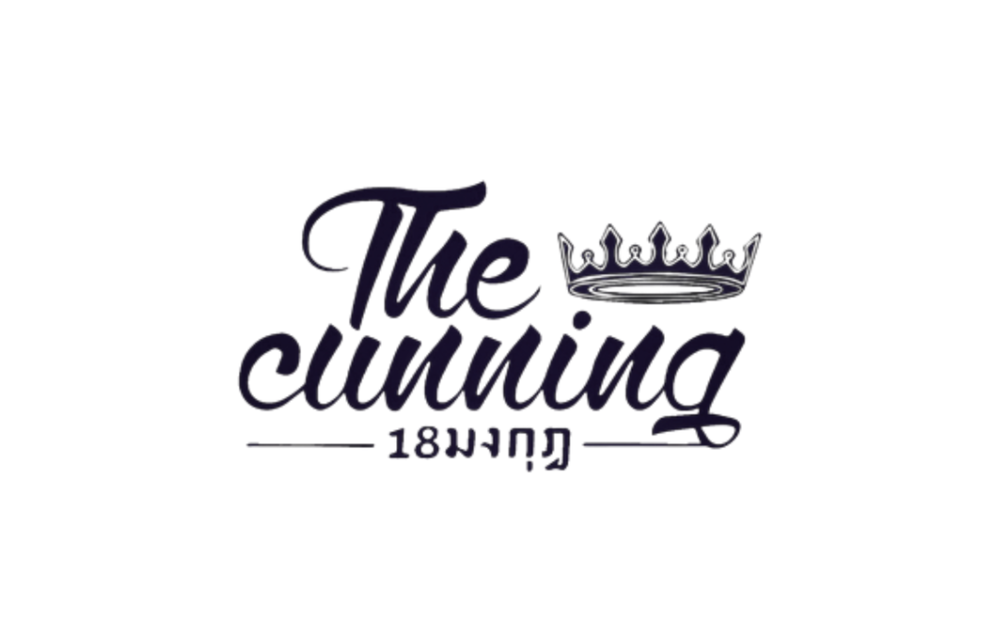
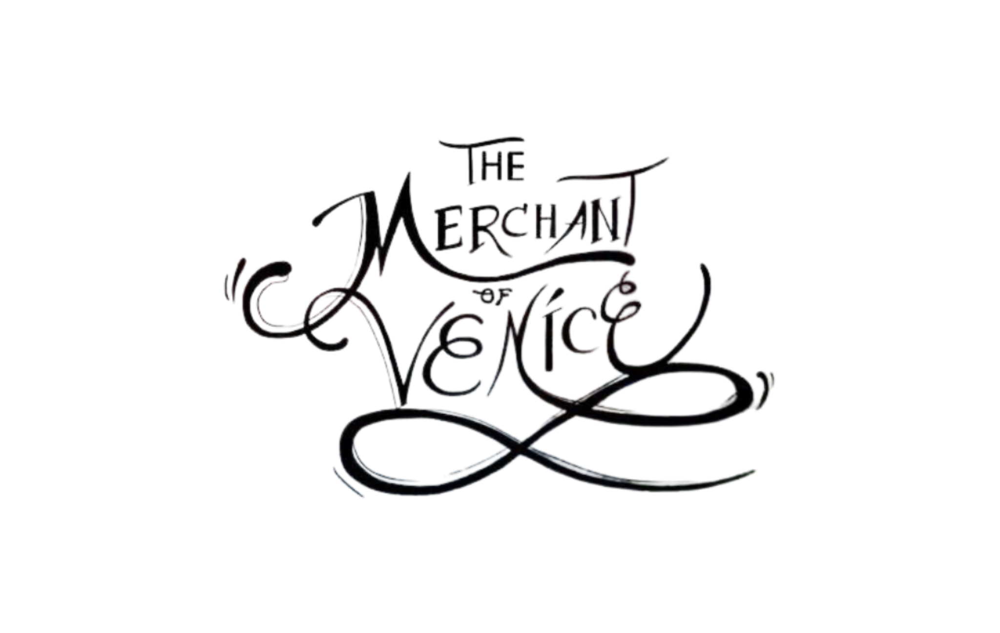
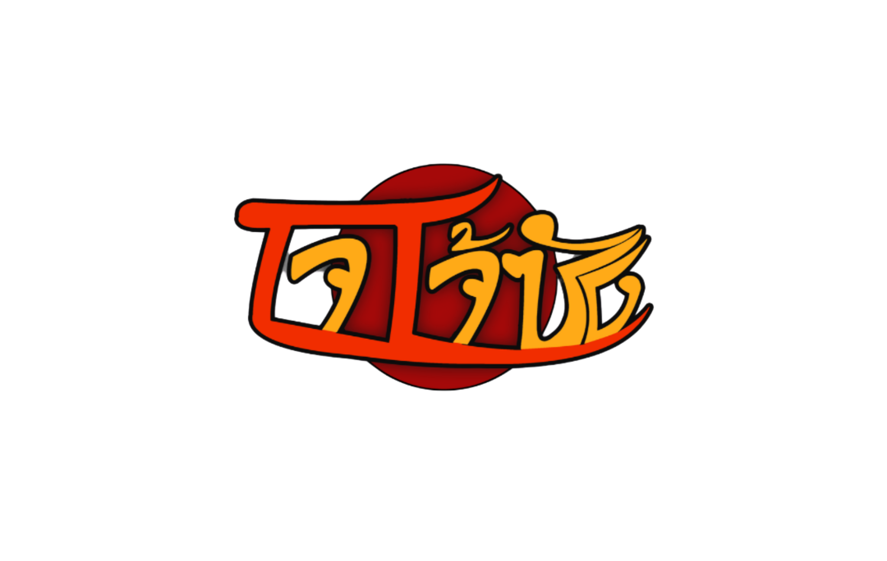
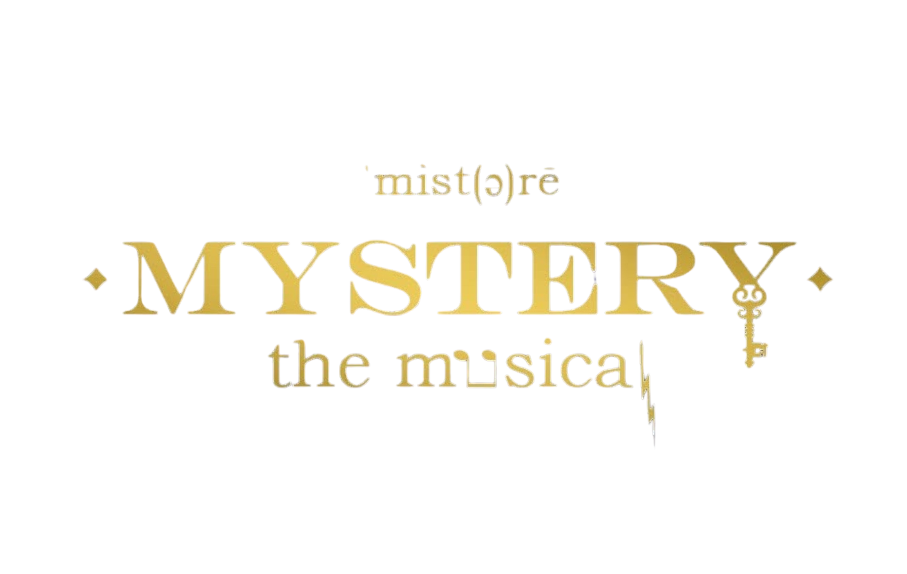
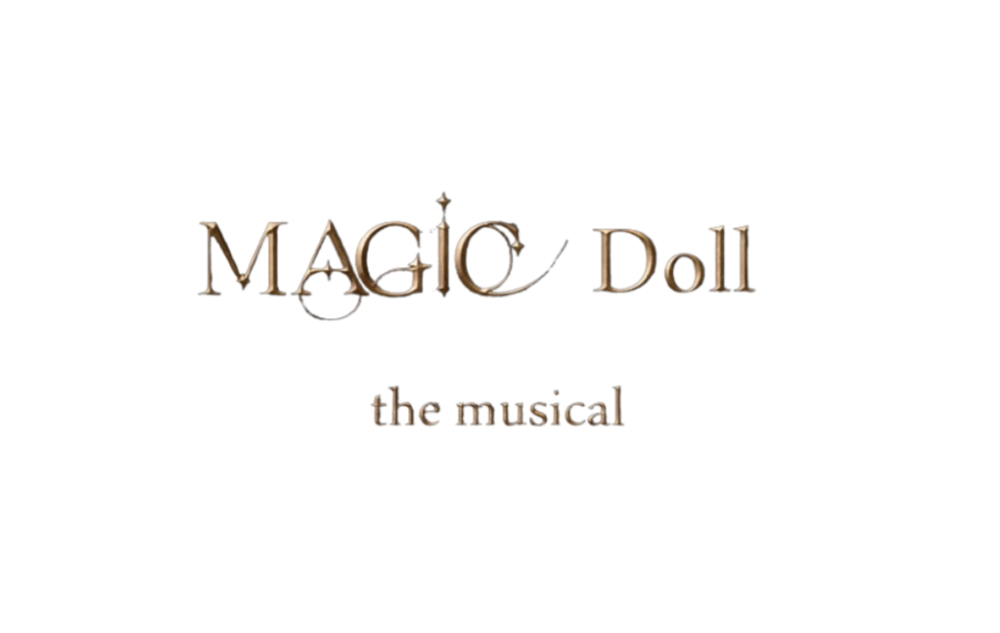
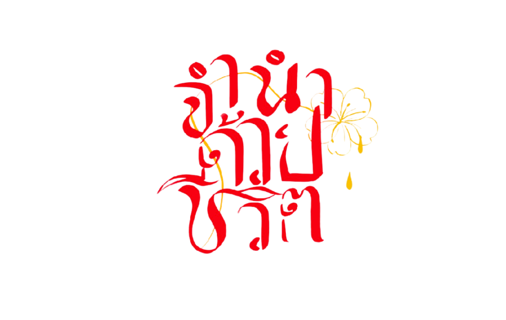
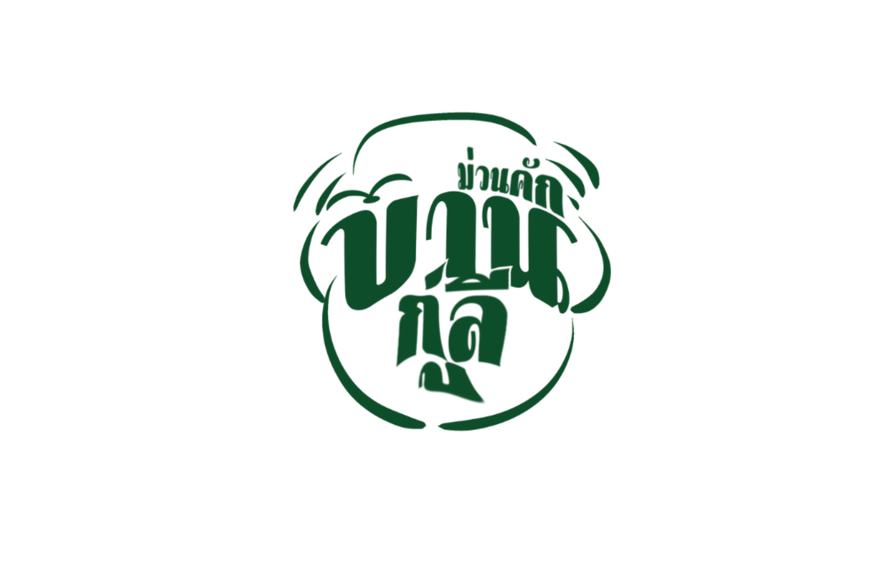

ผลงานการแสดงละครเวทีพระมารดาฯ

เรื่องที่ 1 ลิขิต..ปริศนา ปีการศึกษา 2555
“พินัยกรรมฉบับนี้ ขอมอบให้แก่หญิงสาวคนรักของฉันถึงแม้ว่าคนรอบข้างจะปฏิเสธเธอ แต่ระยะเวลาสามารถพิสูจน์ได้ว่า เธอนั้นมีคุณค่าต่อฉันมากเหลือเกิน”
แสดงจริงวันที่ 30 พฤศจิกายน - 1 ธันวาคม พ.ศ. 2555

เรื่องที่ 2 ปริศนาของเวตาล ปีการศึกษา 2556
“พระราชาผู้มีสัจจะเป็นมั่น จงไปนำตัวเวตาลมาให้ข้าทำพิธีบูชายัญ เพราะข้าเชื่อว่า พระราชาเป็นผู้มีความเฉลียวฉลาด แก้ไขปัญหาได้อย่างยอดเยี่ยม”
แสดงจริงวันที่ 29 - 30 พฤศจิกายน พ.ศ. 2556

เรื่องที่ 3 18 มงกุฎ ปีการศึกษา 2557
“การโกหกหลอกลวง อาจจะมีความสุขแค่ชั่วครั้งชั่วคราวผลลัพธ์ที่จะตามมานั้น มันจะทำลายเกียรติยศของคนผู้นั้นอย่างไร้ตัวตน”
แสดงจริงวันที่ 28 - 29 พฤศจิกายน พ.ศ. 2557

เรื่องที่ 4 เวนิส วานิช ปีการศึกษา 2558
“อันความกรุณาปราณี จะมีใครบังคับก็หาไม่หลั่งมาเองเหมือนฝนอันชื่นใจจากฟากฟ้าสุราลัยสู่แดนดิน”
แสดงจริงวันที่ 8 - 9 มกราคม พ.ศ. 2559
เรื่องที่ 5 เทิดพระเกียรติ ปีการศึกษา 2559
“ความทุกข์ใดไหนจะเท่าทุกข์แห่งการสูญเสียที่พ่อของแผ่นดินลาจากโลกสู่สวรรคาลัย เหลือไว้แห่งความอาลัยอาวรณ์ และคราบน้ำตาที่ส่งคุณคุณาประโยชน์ต่อประเทศชาติ บ้านเมืองอย่างหาที่สุดมิได้”
แสดงจริงวันที่ 12 - 14 มกราคม พ.ศ. 2560
เรื่องที่ 6 อมตะ ชีวิตนี้นิรันดร ปีการศึกษา 2560
“ร่างกายคนเราไม่สามารถยื้อยุดให้เป็นอมตะได้ตลอดชั่วนิรันดร ความดีต่างหากที่จะอยู่เป็นอมตะให้คนรุ่นหลังได้กล่าวยกย่องสรรเสริญ นี่แหละคืออมตะของชีวิตอย่างแท้จริง”
แสดงจริงวันที่ 24 - 27 มกราคม พ.ศ. 2561

เรื่องที่ 7 โจโจ้ซัง ปีการศึกษา 2561
“ตลอดระยะเวลาที่ผ่านมา ฉันเฝ้ารอนับวันรอคุณกลับมา จากวันเป็นเดือน จากเดือนเป็นปีจากปีเป็นหลาย ๆ ปี คุณคงไม่รู้หรอก เพราะคุณไม่ใช่คนที่เฝ้ารอ และก็ไม่รู้หรอกว่ามันแสนทรมานแค่ไหน”
แสดงจริงวันที่ 10 - 12 มกราคม พ.ศ. 2562
เรื่องที่ 8 ผู้ชนะสิบทิศ ปีการศึกษา 2562
“เราก็เป็นคนรักชีวิต และรักกุสุมายิ่งกว่าชีวิตแต่ทั้งกุสุมา และชีวิตเรารวมกันแล้วเราก็ยังรักน้อยกว่าเมืองตองอู”
แสดงจริงวันที่ 12 - 14 กันยายน พ.ศ. 2562

เรื่องที่ 9 Mystery The Musical ปีการศึกษา 2563
“ ‘ระวังคนที่เธอรักไว้ให้ดี’ แม่มดตนหนึ่งกล่าวก่อนที่จะหายไป ยามที่เธอจะกลับมาล้างแค้น เมื่อนั้นท้องฟ้าจะมืดมิดพระจันทร์จะกลายเป็นสีเลือด และถึงเวลา ที่เธอจะลงมือ...”
แสดงจริงวันที่ 1 - 6 มีนาคม พ.ศ. 2564

เรื่องที่ 10 Magic Doll The Musical ปีการศึกษา 2564
(ถูกยกเลิกเนื่องจากการแพร่ระบาดของ Covid-19)

เรื่องที่ 11 จำนำด้วย...ชีวิต ปีการศึกษา 2565
“ระยะเวลาของการจำนำ 1 ปี ถ้าพ้นกำหนด สิ่งที่นำมาจำนำจะตกเป็นของโรงรับจำนำไปตลอดกาล แต่ไม่เคยมีผู้จำนำคนไหนมาไถ่คืนเลยแม้แต่คนเดียว มีแต่จะนำสิ่งต่าง ๆ มาจำนำเพิ่มมากขึ้นจนท้ายที่สุด ก็จำนำด้วย…ชีวิต”
แสดงจริงวันที่ 11 - 14 มกราคม พ.ศ. 2566

เรื่องที่ 12 ม่วนคัก บ้านกู่ลี ปีการศึกษา 2566
“วันนี้ฉันได้ไปประชุมที่อำเภอมาทางการเขาสั่งมาว่าให้พวกเราเลี้ยงเป็ด และสุกรแทนการเพาะปลูกนะเพราะเข้าหน้าแล้งแล้ว น้ำมันแห้งเหือดเหลือน้อยแล้วปลูกพืชไปมันก็จะตาย ‘ผู้ใหญ่สุกรคืออะไร สุกรคือน่าหมายถึงหมาน้อยหมาน้อยนะฮ่า ๆ อย่างง ๆ หมายถึงหมูอู๊ด ๆ ’ ”
แสดงจริงวันที่ 10 - 13 มกราคม พ.ศ. 2567
เรื่องที่ 13 ในห้วงคำนึง… ปีการศึกษา 2567
“ทุกชีวิตย่อมมีห้วงคำนึงในอดีตทั้งสิ้น บางคนเป็นห้วงคำนึงที่อยากจดจำ บางคนก็มีห้วงคำนึงที่ยากจะลืม”
แสดงจริงวันที่ 8 - 11 มกราคม พ.ศ. 2568